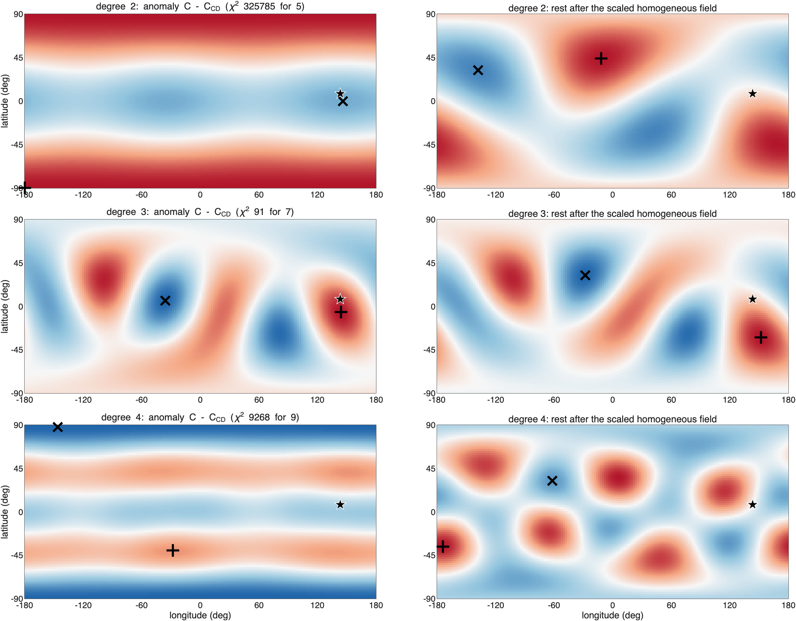
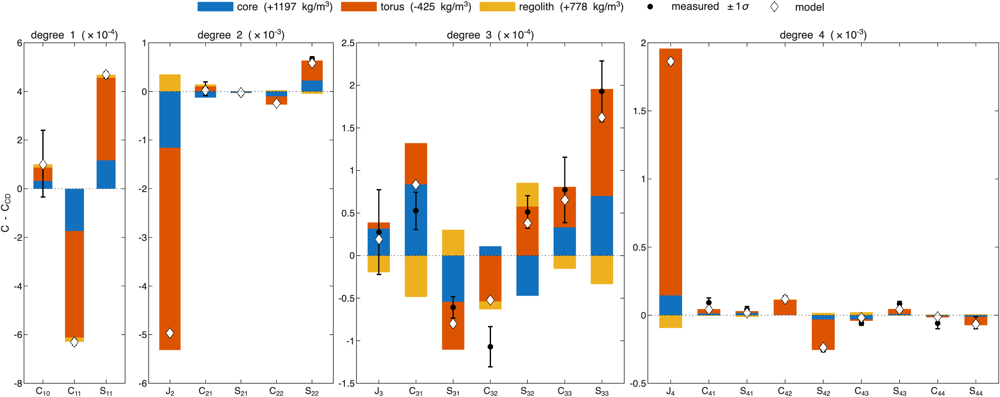
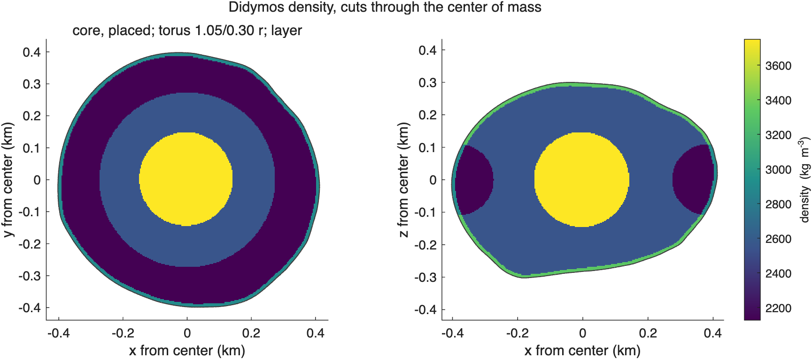
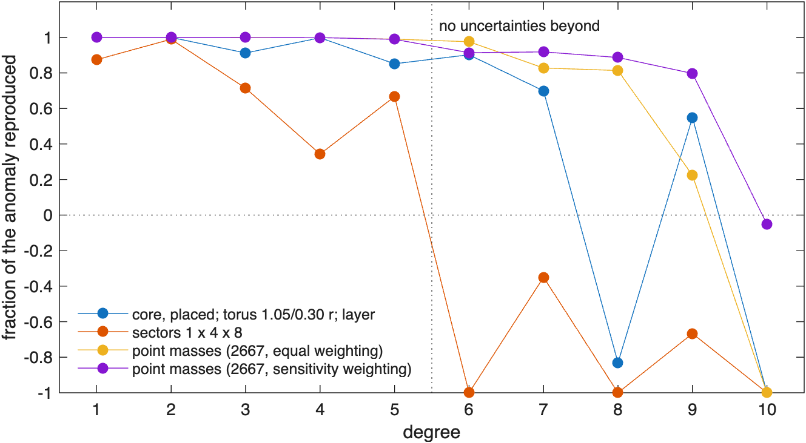
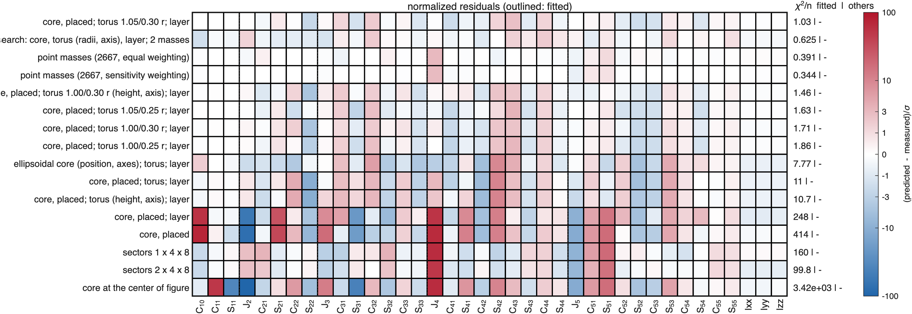
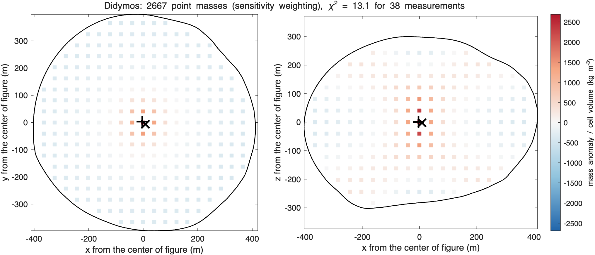
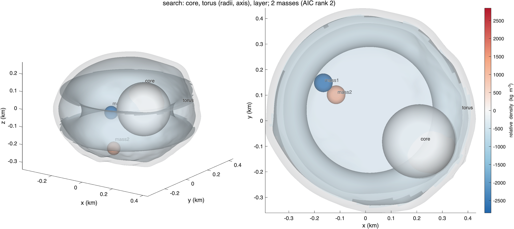

ROB-DATA3: Didymos#
Last edited October 27, 2026
In short. The even zonal coefficients change far more than anything else: J2 is 570σ lower and 95σ higher than constant density, the signature of a ring about the spin axis. The best solution is a dense core at the center (+1200 kg/m³), a light, thick torus about the z-axis (−425 kg/m³, ring radius 383 m, tube radius 110 m) and a dense thin layer: reduced χ² 1.22 (p = 0.18) with 6 parameters, and it reproduces ROB's exact values to degree 7. The point masses come close but need 30 to 32 of the 38 measurements' degrees of freedom; the sector grids, whose sectors run from the center to the surface, cannot make a ring at all.
| Kind | Best solution of the kind | Parameters | Reduced χ² | p | AIC | Mean squared residual, degrees 1–4 |
|---|---|---|---|---|---|---|
| components | core; torus (383 m, 110 m); layer | 6.0 | 1.22 | 0.18 | 51.1 | 1.37 |
| search | core, torus, layer and 2 masses | 17.0 | 1.13 | 0.30 | 57.8 | 0.79 |
| point masses | 2,667, equal weighting | 30.4 | 1.97 | 0.05 | 75.8 | 0.61 |
| sectors | 2 × 4 × 8 | 35.8 | 1760 | 0 | 3866 | 158 |
1. What the measurements say#

C - C_CD 1-sigma sigma what it says
C11 -6.295e-04 1.240e-05 -50.8 center of mass toward -x
S11 4.687e-04 1.304e-05 35.9 center of mass toward +y
C20 4.963e-03 8.701e-06 570.4 J2 lower: mass toward the poles or the center, away from the equator
C22 -2.449e-04 2.645e-05 -9.3 mass toward +-y more than +-x (elongation along y)
S22 6.726e-04 3.934e-05 17.1 mass toward longitudes 45 and 225 deg
S31 -6.063e-05 1.250e-05 -4.8 order 1: its pattern peaks at longitude -49 deg (and every 360 deg) where Pbar_31 is positive, at the opposite longitudes where it is negative
C32 -1.070e-04 2.346e-05 -4.6 order 2: its pattern peaks at longitude 77 deg (and every 180 deg) where Pbar_32 is positive, at the opposite longitudes where it is negative
S33 1.928e-04 3.576e-05 5.4 order 3: its pattern peaks at longitude 23 deg (and every 120 deg) where Pbar_33 is positive, at the opposite longitudes where it is negative
C40 -1.863e-03 1.969e-05 -94.6 zonal degree 4
C42 1.256e-04 1.686e-05 7.4 order 2: its pattern peaks at longitude -32 deg (and every 180 deg) where Pbar_42 is positive, at the opposite longitudes where it is negative
S42 -2.532e-04 1.697e-05 -14.9 order 2: its pattern peaks at longitude -32 deg (and every 180 deg) where Pbar_42 is positive, at the opposite longitudes where it is negative
C43 -5.865e-05 1.668e-05 -3.5 order 3: its pattern peaks at longitude 42 deg (and every 120 deg) where Pbar_43 is positive, at the opposite longitudes where it is negative
S43 8.151e-05 1.968e-05 4.1 order 3: its pattern peaks at longitude 42 deg (and every 120 deg) where Pbar_43 is positive, at the opposite longitudes where it is negative- +570σ (J2 lower) and −95σ ( higher): the zonal terms of degrees 2 and 4 change by 12% and 35% of their constant-density values; degrees 3 and 5 by a few percent. Only the even degrees changing is what a ring or a torus about the spin axis does, and J2 lower means less mass in the equatorial plane: the ring is light.
- The center of mass is 0.56 m off (toward −x and +y): something off center, but small.
- , , (9σ, 17σ, 15σ): the body's elongation changes too.
2. Where the mass is#

Center of mass 0.56 m from the center of figure toward lat 8, lon 143 (36 sigma): the anomalous mass is on that side (or a deficit on the other).
Degree 2 (chi-square 325785 for 5): second moment of the anomaly axis, values 0.62, -0.23, -0.38 of their spread.
axis toward (largest): lat +90 lon -45 and lat -90 lon 135, +-1 deg
axis middle: lat +0 lon 55 and lat -0 lon -125, +-1 deg
axis away from (smallest): lat +0 lon 145 and lat -0 lon -35, +-1 deg
mass moved toward both ends of the axis through lat +90 lon -45 and lat -90 lon 135.
Rest of degree 2 (without the scaled homogeneous field): triaxial, values 0.54, -0.09, -0.46.
mass moved toward the axis through lat +44 lon -11 and lat -44 lon 169 and away from the axis through lat +32 lon -138 and lat -32 lon 42.
Each degree on the sphere (strongest excess / strongest deficit; rest after the scaled homogeneous field):
degree 2 chi2 325785 for 5: excess lat -90 lon -180, deficit lat +0 lon +146; rest: excess lat +44 lon -12, deficit lat +32 lon -138
degree 3 chi2 91 for 7: excess lat -6 lon +144, deficit lat +6 lon -36; rest: excess lat -32 lon +152, deficit lat +32 lon -28
degree 4 chi2 9268 for 9: excess lat -40 lon -28, deficit lat +88 lon -146; rest: excess lat -36 lon -174, deficit lat +32 lon -62- Degree 2 moves mass toward the poles: an axis along z (its largest principal value stands out, 0.62 against −0.23 and −0.38). A light ring in the equator does that, and so does a dense center.
- The maps of degrees 2 and 4 are bands of latitude: the equator against the poles, with no preferred longitude.
- So the model given to the fit was a core at the center, a torus about the z-axis through the center of figure, and a surface layer; the torus's radii were searched (1.00 and 1.05 of the mean radius, tube 0.25 and 0.30 of it), because a torus of the wrong size cannot make and in the right proportion.
3. The solutions compared#

- The model with components and the search keep and , the two largest coefficients by far, within 1σ; their largest misfits are small terms of degrees 2 to 4 (, , , , 2.0 to 2.4σ).
- The point masses match every coefficient within 1σ except (3.7σ too high), using nearly all the freedom the measurements have (30 of 38 effective parameters).
- The sector grids fail: a sector spans the full depth (or half of it) and cannot put a light ring 280 to 490 m from the center under a normal surface.
AIC solution kind params chi2/nu p AIC res^2 1-4 largest exact2-4 exact5-10
1 core, placed; torus 1.05/0.30 r; layer components 6.0 1.22 0.18 51.1 1.37 C43 0.97 -0.40
2 search: core, torus (radii, axis), layer; 2 masses search 17.0 1.13 0.3 57.8 0.787 C32 0.96 0.06
3 core, placed; torus 1.00/0.30 r (height, axis); layer components 9.0 1.91 0.0023 73.3 2.09 S22 0.96 0.07
4 core, placed; torus 1.05/0.25 r; layer components 6.0 1.93 0.0012 73.8 2.02 C43 0.96 -3.51
5 point masses (2667, equal weighting) point masses 30.4 1.97 0.05 75.8 0.608 C40 1.00 0.30
6 point masses (2667, sensitivity weighting) point masses 31.7 2.07 0.05 76.4 0.536 C40 1.00 0.74
7 core, placed; torus 1.00/0.30 r; layer components 6.0 2.03 0.00053 76.8 2.49 S22 0.96 0.04
8 core, placed; torus 1.00/0.25 r; layer components 6.0 2.21 9.7e-05 82.7 2.53 C32 0.95 -2.52
9 ellipsoidal core (position, axes); torus; layer components 9.0 10.2 7.3e-46 313.2 10.3 S42 0.75 -7.70
10 core, placed; torus (height, axis); layer components 9.0 14 4.6e-68 423.9 15.1 S22 0.80 -6.45
11 core, placed; torus; layer components 6.0 13.1 9.4e-69 429.9 15.6 S22 0.80 -6.34
12 sectors 2 x 4 x 8 sectors 35.8 1.76e+03 0 3865.8 158 C40 0.78 -2.49
13 sectors 1 x 4 x 8 sectors 30.9 862 0 6139.6 253 C40 0.68 -1.19
14 core, placed; layer components 5.0 285 0 9421.8 388 C40 -0.60 -0.06
15 core, placed components 4.0 462 0 15726.1 653 C40 -3.14 0.32
16 core at the center of figure components 1.0 3.51e+03 0 129997.9 5.41e+03 C20 0.38 0.32
Ordered by AIC = chi2 + 2 x params (Akaike information criterion: the fit with a penalty for every parameter; lower is better).
params: effective number of parameters; chi2/nu, p: the fit to every measurement (coefficients and moments, full covariance);4. The best solution: a dense core, a light thick torus and a dense layer#

component type center - cof (m) dist m lat lon drho kg/m^3 rho mass kg makes most of (sigma)
core sphere [ -4 3 1] 5 9 146 1197 +- 104 3749 1.56e+10 C20 +133, C11 -14, S11 +9
torus torus [ 0 0 0] R 383 a 110 tilt 0.0 0 0 0 -425 +- 7 2126 -1.93e+10 C20 +478, C40 -92, C11 -35
regolith layer 0 to 11 m deep NaN NaN NaN 778 +- 252 3330 1.37e+10 C20 -40, C40 +5, S31 +2
background 2552 kg/m^3 (bulk 2601); makes most of: the component's share of each coefficient in units of its 1-sigma
Why each component is where it is, and dense or light:
- The light torus (−425 kg/m³; ring radius 383 m, about the body's mean radius; tube radius 110 m) removes mass from the equatorial plane: it makes most of J2 (+478σ of ) and nearly all of (−92σ of ). Its two radii are what make and in the measured proportion.
- The dense core (+1200 kg/m³, 5 m from the center of figure) concentrates mass at the center: it adds to J2 (+133σ) and makes the small center-of-mass offset.
- The dense layer (+780 kg/m³, 11 m) takes part of J2 back (−40σ): with the torus taking mass from the outer equator, the surface itself is denser than the background.

5. The solutions side by side#

solution (AIC rank) moved (% M) excess at (m) deficit at (m)
1. core, placed; torus 1.05/0.30 r; layer 3.28 [-3 2 -1] [6 -5 -1]
2. search: core, torus (radii, axis), layer; 2 masses 4.69 [-7 5 -3] [-0 -1 -3]
5. point masses (2667, equal weighting) 2.72 [-3 3 1] [14 -9 -2]
correlation of the cells of each pair:
1 2 5
1 1.00 0.37 0.46
2 0.37 1.00 0.57
5 0.46 0.57 1.00
moved: the mass above the bulk density M/V (equal to the mass below it), in 41 m cells; excess at, deficit at: where that mass is centered, from the center of figure.All three take mass from the outer part of the equatorial plane, 270 m and more from the spin axis, and put it farther in: their excess and their deficit are both centered within 15 m of the center of figure, as for a structure symmetric about the spin axis. Where farther in differs. The model with components puts the mass in a dense core of 145 m radius at the center, under a dense surface layer; the search makes the whole interior inside its torus denser, under a light crust; the point masses put it toward the poles and, less, at the center. Cell by cell they correlate 0.37 to 0.57. The light equatorial ring is what the measurements fix ( and ); how the mass inside it is arranged they leave open. The sector grids are far from consistent (section 3) and are not shown.
6. Beyond the fitted coefficients#
model fitted to chi2/nu chi2/n fitted chi2/n others
core, placed; torus 1.05/0.30 r; layer degrees 1-2 0.344 0.157 6.63
core, placed; torus 1.05/0.30 r; layer degrees 1-3 0.699 0.466 3.36
core, placed; torus 1.05/0.30 r; layer degrees 1-4 1.51 1.18 0.742
core, placed; torus 1.05/0.30 r; layer degrees 1-5 1.22 1.03 -
sectors 1 x 4 x 8 degrees 1-2 2.51 0.768 251
sectors 1 x 4 x 8 degrees 1-3 2.41 0.508 231
sectors 1 x 4 x 8 degrees 1-4 1.75e+03 188 2.56e+04
sectors 1 x 4 x 8 degrees 1-5 862 160 -
point masses (2667, equal weighting) degrees 1-2 2.38 0.853 52.6
point masses (2667, equal weighting) degrees 1-3 2.22 0.612 68.2
point masses (2667, equal weighting) degrees 1-4 2.29 0.381 1.14
point masses (2667, equal weighting) degrees 1-5 1.97 0.391 -
point masses (2667, sensitivity weighting) degrees 1-2 2.36 0.871 143
point masses (2667, sensitivity weighting) degrees 1-3 2.14 0.663 195
point masses (2667, sensitivity weighting) degrees 1-4 2.38 0.348 0.335
point masses (2667, sensitivity weighting) degrees 1-5 2.07 0.344 -
Fraction of each degree's anomaly (exact values) reproduced by the fit to every degree, 1 - |model - given|^2/|given|^2:
model 1 2 3 4 5 6 7 8 9 10
core, placed; torus 1.05/0.30 r; layer 1.00 1.00 0.91 1.00 0.85 0.90 0.70 -0.83 0.55 -4.57
sectors 1 x 4 x 8 0.87 0.99 0.71 0.34 0.67 -1.21 -0.35 -2.55 -0.67 -3.00
point masses (2667, equal weighting) 1.00 1.00 1.00 1.00 0.99 0.98 0.83 0.81 0.22 -2.00
point masses (2667, sensitivity weighting) 1.00 1.00 1.00 1.00 0.99 0.91 0.92 0.89 0.80 -0.05
- Fitted to degrees 1–4, the model with components predicts degree 5 at 0.74 per coefficient.
- Of ROB's exact values it reproduces degrees 1 to 7 at 70–100%, the best of the solutions with few parameters: the true interior is close to a core and a ring. The point masses with sensitivity weighting reproduce even more, 80% to 100% of every degree to 9, a smooth version of the same structure.
7. Details#


